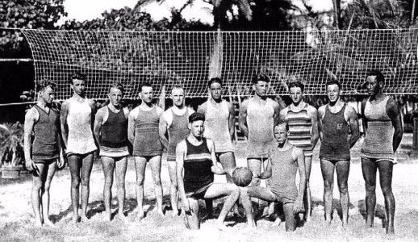
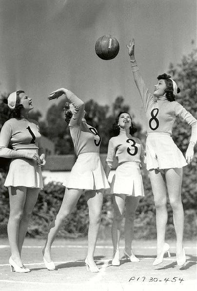
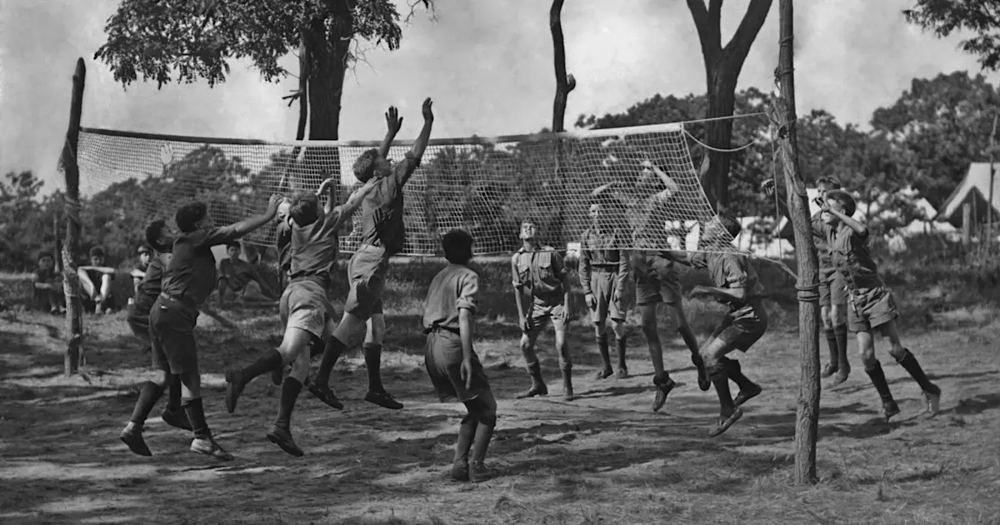
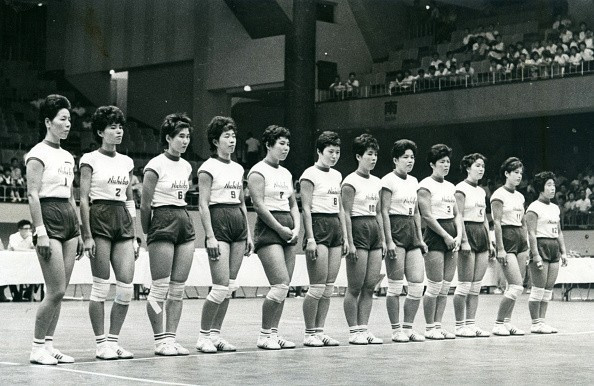
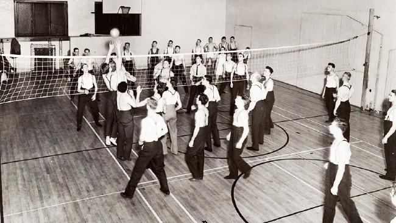
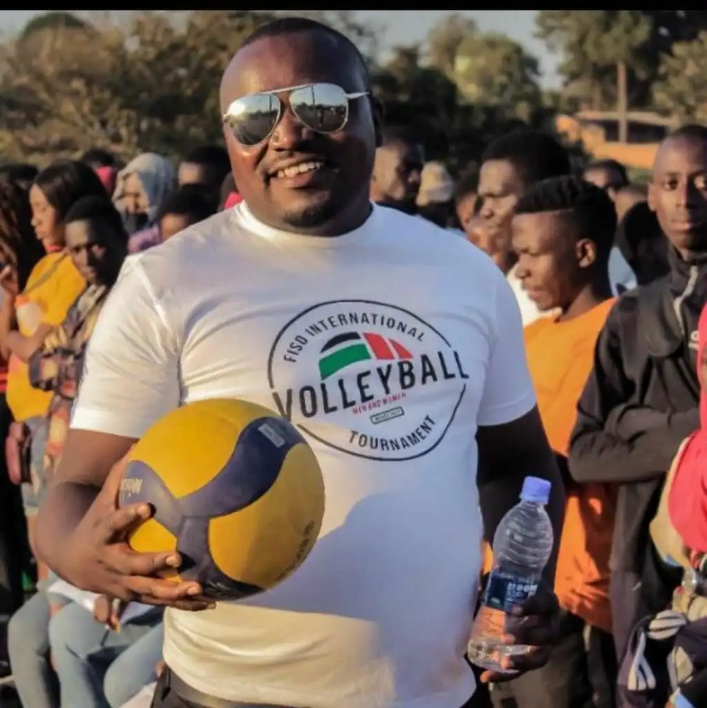

|  | Volejbola Vēsture
|
|  | Sākotnējais Volejbola Koncepts
|
|  | Oficiālā Volejbola Pirmizrāde
|
|  | Volejbols kā Olimpiskais Sports
|
|  | Volejbola Attīstība
|
|  | Populārs Starptautisks Sporta Veids
|